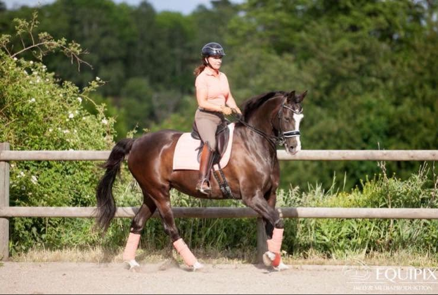

Lena Lilja provar ut och säljer sadlar med hästens rörelse och ryttarens sits i fokus. För ökad rörelsefrihet, bättre balans och ett mer harmoniskt samspel.
Gedigen kunskap, förankrad i decennier inom dressyren – hela vägen upp till Grand Prix.
Personlig utprovning och tryckmätning som utgår från hästens rygg och din sits. Här börjar de flesta sadelköp.
Läs mer →Nya sadlar från Amerigo och Equipe samt noga utvalda begagnade sadlar i fint skick – redo att provas.
Se utbudet →Dressyrlektioner, clinics och Sitsprofilen med tryckmattan – Lenas egen metod för sits och hjälpgivning. Utvecklar dig och din häst, oavsett nivå.
Till kurserna →
Foto: Equipix
Diplomerad B-tränare i dressyr sedan 1996 och auktoriserad dressyrdomare – med ett helt liv bland hästar vet Lena hur avgörande rätt sadel är för hästens hälsa, rörelse och för din möjlighet att sitta rätt.
Varje utprovning bygger på förståelse för hästens anatomi, sadelns konstruktion och samspelet mellan häst och ryttare. Det är därför så många återkommer.
Lär känna LenaExempel på hur utbudet visas. Uppdatera med aktuella sadlar och bilder.
Fyra hästar utbildade till Grand Prix, B-tränare sedan 1996 och auktoriserad domare. Du får råd byggda på decennier i sporten.
Med tryckmattan och Sitsprofilen blir sadelns passform och din sits synlig på skärm – inga gissningar, bara tydliga svar.
Rätt sadel och sits ger friare rörelse och en gladare häst. Det syns i ridningen, och domaren märker skillnaden.
Lena Lilja är sadeltekniker för Amerigo och Equipe och säljer både nya måttbeställda och utvalda begagnade sadlar för dressyr, hoppning, fälttävlan och Island.
Sitsprofilen är Lena Liljas eget koncept där en tryckmatta visar på skärm hur ryttaren fördelar vikten via sittbenen – ett tydligt verktyg för sits och hjälpgivning. 30 minuter kostar 800 kr.
Dressyrlektion kostar 800 kr för 30 minuter och 1 175 kr för 45 minuter. Programträning 30 min 600 kr och digital programbedömning 400 kr. Betalning sker via Swish efter lektionen.
Lena utgår från Frösthult Gästre utanför Fjärdhundra i Uppland och gör sadelprovningar och träningar i hela Sverige.
Boka via bokningsformuläret på webbplatsen, ring 070-672 70 37 (telefontid mån–fre 8:30–10:30) eller mejla info@lenalilja.se.
Boka en sadelprovning så tittar vi tillsammans på hästen, sadeln och din sits.